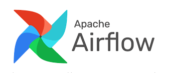

Note
Other than my experience and the documentation, the main resource behind this post and figures is the fantastic book: Data Pipelines with Apache. Airflow.
- Stick to coding style conventions by using tools like flake8, pylint, black
- There are two ways to define DAGs. Stick to one of them:
- With context manager:
with DAG(...) as dag: task1 = PythonOperator(...) task2 = PythonOperator(...)- Traditional:
dag = DAG(...) task1 = PythonOperator(..., dag=dag) task2 = PythonOperator(..., dag=dag) - There are also multiple ways to define dependencies. Stick to one of them:
task1 >> task2
task1 << task2
[task1] >> task2
task1.set_downstream(task2)
task2.set_upstream(task1)- When loading config files, make sure to understand where the loading happens:
- At the top level on the scheduler
- At the DAG level when it is parsed
- Or when the DAG is executing -> in the worker
- Avoid doing any computation in DAG definition:
- At the top level, it will be computed every time the DAG is loaded
- In the DAG definition, it will be executed every time the DAG is parsed by the scheduler
- In the task, it will be computed when the task is executed on the worker machine
- Fetch credentials within the task, so they are only fetched once the task is executed
- Use factory methods to generate DAGs or set of tasks that are almost typical with few minor changes. Example:
def generate_tasks(dataset_name, raw_dir, processed_dir, preprocess_script, output_dir, dag):
raw_path = os.path.join(raw_dir, dataset_name, "{ds_nodash}.json")
processed_path = os.path.join(
processed_dir, dataset_name, "{ds_nodash}.json" )
output_path = os.path.join(output_dir, dataset_name, "{ds_nodash}.json")
fetch_task = BashOperator(
task_id=f"fetch_{dataset_name}",
bash_command=f"echo 'curl http://example.com/{dataset_name}.json{raw_path}.json'", dag=dag,
)
preprocess_task = BashOperator(
task_id=f"preprocess_{dataset_name}",
bash_command=f"echo '{preprocess_script} {raw_path} {processed_path}'", dag=dag,
)
export_task = BashOperator(
task_id=f"export_{dataset_name}",
bash_command=f"echo 'cp {processed_path} {output_path}'", dag=dag,
)
fetch_task >> preprocess_task >> export_task
return fetch_task, export_task
with DAG(
dag_id="01_task_factory",
start_date=airflow.utils.dates.days_ago(5),
schedule_interval="@daily",
) as dag:
for dataset in ["sales", "customers"]:
generate_tasks(
dataset_name=dataset,
raw_dir="/data/raw",
processed_dir="/data/processed",
output_dir="/data/output",
preprocess_script=f"preprocess_{dataset}.py", dag=dag
)- We can use
TaskGroupto group related tasks into groups that will help us navigating the DAG in the UI. This is very helpful when DAGs become very complicated - Create new DAGs for big changes such as renaming/removing tasks or changing the schedule_date/interval so we can keep the historical info about old DAGs and not confuse the scheduler. Scheduler database has instances of the runs of each DAG
- Make sure that tasks are idempotenet -> Regardless when they run, If given the same input the should produce the same output. Therefore, be careful when writing data. We may want to overwrite or upsert to avoid appending the same data
- Also, tasks should not have side effects
- Avoid writing intermediate results on local filesystem because each task runs independently (and mostly on different machines) -> Use cloud shared storage such as Amazon’s S3 bucket where all workers can access it
- We can use SLAs on each DAG/task where Airflow will notify if they don’t finish within SLA. DAG takes
slaargument